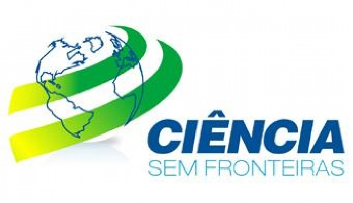

Conheça o programa Ciência sem Fronteiras(){
Mundo Acadêmico
Por: Pedro Augusto da Silva Reis

O Ciência sem Fronteiras é um programa do governo federal, oriundo da parceria entre Ministério da Ciência e Tecnologia (MCT) e Ministério da Educação (MEC). Este é um programa que visa potencializar a capacidade científica e tecnológica brasileira, através de intercâmbios. Para isso, até 2014, 75000 bolsas serão oferecidas à alunos de graduação e pós-graduação, para que os mesmos possam fazer estágio no exterior e manter contato com instituições de ensino que sejam modelo de desenvolvimento científico e tecnológico. Mas não é só a "exportação" de alunos que o programa objetiva, também almeja atrair pesquisadores internacionais para as instituições de ensino superior brasileiras. Segundo o governo federal, os principais objetivos do programa são:
-
Investir na formação de pessoal altamente qualificado nas competências e habilidades necessárias para o avanço da sociedade do conhecimento;
-
Aumentar a presença de pesquisadores e estudantes de vários níveis em instituições de excelência no exterior;
-
Promover a inserção internacional das instituições brasileiras pela abertura de oportunidades semelhantes para cientistas e estudantes estrangeiros;
-
Ampliar o conhecimento inovador de pessoal das indústrias tecnológicas;
-
Atrair jovens talentos científicos e investigadores altamente qualificados para trabalhar no Brasil.
Das 75000 bolsas que serão distribuídas, 35000 serão oferecidas pelo CNPq, o qual fará um investimento de R$1,43 bilhão, as outras 40000 bolsas são de responsabilidade da CAPES, que utilizará R$1,73 bilhão em recursos.
O programa, ainda definiu algumas áreas prioritárias para liberação das bolsas:
- Engenharias e demais áreas tecnológicas;
- Ciências Exatas e da Terra;
- Biologia, Ciências Biomédicas e da Saúde;
- Computação e Tecnologias da Informação;
- Tecnologia Aeroespacial;
- Fármacos;
- Produção Agrícola Sustentável;
- Petróleo, Gás e Carvão Mineral;
- Energias Renováveis;
- Tecnologia Mineral;
- Biotecnologia;
- Nanotecnologia e Novos Materiais;
- Tecnologias de Prevenção e Mitigação de Desastres Naturais;
- Biodiversidade e Bioprospecção;
- Ciências do Mar;
- Indústria Criativa;
- Formação de Tecnólogos.
Bolsas no país
Um dos objetivos do programa Ciência sem Fronteiras é atrair jovens pesquisadores de outros países e repatriar pesquisadores brasileiros que estejam no exterior. Para isso, duas modalidades de bolsas foram criadas, Pesquisador Visitante Especial e Bolsa Jovens Talentos, que custearão pesquisadores internacionais em seus trabalhos no Brasil.
Modalidade de bolsas para o exterior
O Programa Ciência sem Fronteiras disponibilizará bolsas para alunos de graduação, doutorado e pós-doutorado. As modalidades de bolsa são:
Graduação Sanduíche no Exterior: Destinada à alunos de graduação para realização de estágio e atividades acadêmicas em alguma instituição de ensino considerada como uma das melhores do mundo na área escolhida. Outra exigência é de que essa área seja uma das prioritárias do programa. A seleção dos alunos é feita, a princípio, internamente em suas respectivas instituições de ensino e deverão ser priorizados aqueles alunos com bom desempenho acadêmico, a seleção final fica a cargo do CNPQ.
Doutorado Sanduíche no Exterior: Semelhante à Graduação Sanduíche, porém esta modalidade é destinada a doutorandos. Periodicamente, o CNPq abrirá editais para seleção de bolsistas.
Doutorado Pleno no Exterior: O objetivo desta modalidade é formar doutores em instituições de ensino de alta qualidade.
Pós-Doutorado no Exterior: Esta modalidade se destina a doutores que desejem realizar pós-doutorado em uma das áreas prioritárias do programa.
As demais modalidades oferecidas pelo Programa Ciência sem Fronteiras são: Estágio Sênior, destinado ao pesquisador sênior que deseja realizar estágio em uma instituição de ensino superior de alta qualidade, e Treinamento no Exterior, que é veiculado a pesquisadores, técnicos e especialistas que desejem realizar treinamento ou reciclagem no exterior.
Para você que deseja uma experiência internacional, não perca a oportunidade dada pelo Programa Ciência sem Fronteiras, acesse o site do programa e confira todas as informações.
Referencias:
cienciasemfronteiras.cnpq
Inovação Tecnológica
}